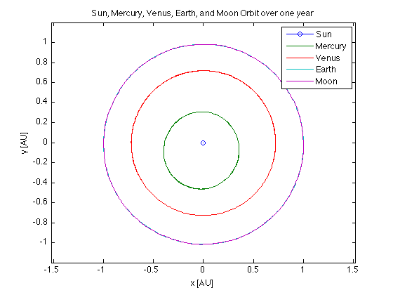
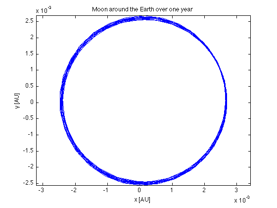

Contents
Hw 7.3
clear all; close all; clc;
Part b.)
AU = 149597870.691;
oneday = 3600*24;
oneyear = 365*oneday;
t_vec = 0:oneday:oneyear;
fivebody_state0 = fivebody_initial();
options = odeset('RelTol', 1e-6, 'AbsTol', 1e-9);
[t_out, fivebody_state] = ode113(@statedot_fivebody, t_vec, fivebody_state0, options) ;
r_sun = fivebody_state(:,1:3);
v_sun = fivebody_state(:,4:6);
r_mer = fivebody_state(:,7:9);
v_mer = fivebody_state(:,10:12);
r_ven = fivebody_state(:,13:15);
v_ven = fivebody_state(:,16:18);
r_ear = fivebody_state(:,19:21);
v_ear = fivebody_state(:,22:24);
r_moo = fivebody_state(:,25:27);
v_moo = fivebody_state(:,28:30);
figure(1)
plot(r_sun(:,1)/AU,r_sun(:,2)/AU,'-o',r_mer(:,1)/AU,r_mer(:,2)/AU,...
r_ven(:,1)/AU,r_ven(:,2)/AU,r_ear(:,1)/AU,r_ear(:,2)/AU,r_moo(:,1)/AU,r_moo(:,2)/AU)
axis([-1.2 1.2 -1.2 1.2])
axis equal
title('Sun, Mercury, Venus, Earth, and Moon Orbit over one year')
legend('Sun','Mercury','Venus','Earth','Moon')
xlabel('x [AU]')
ylabel('y [AU]')

Part c.)
run('/Users/marian/Documents/MATLAB/AA279/Hw7/Gravitation_Parameters.m');
sum_of_mu = mu_sun + mu_mer + mu_ven + mu_ear + mu_moo;
r_cm_init = (mu_sun*r_sun(1,1:3) + mu_mer*r_mer(1,1:3) + mu_ven*r_ven(1,1:3) +...
mu_ear*r_ear(1,1:3) + mu_moo*r_moo(1,1:3))/sum_of_mu;
r_cm_final = (mu_sun*r_sun(end,1:3) + mu_mer*r_mer(end,1:3) + mu_ven*r_ven(end,1:3) +...
mu_ear*r_ear(end,1:3) + mu_moo*r_moo(end,1:3))/sum_of_mu;
v_cm_init = (mu_sun*v_sun(1,1:3) + mu_mer*v_mer(1,1:3) + mu_ven*v_ven(1,1:3) +...
mu_ear*v_ear(1,1:3) + mu_moo*v_moo(1,1:3))/sum_of_mu;
v_cm_final = (mu_sun*v_sun(end,1:3) + mu_mer*v_mer(end,1:3) + mu_ven*v_ven(end,1:3) +...
mu_ear*v_ear(end,1:3) + mu_moo*v_moo(end,1:3))/sum_of_mu;
disp(['r_cm_initial [km] = ' num2str(r_cm_init)])
disp(['r_cm_final [km] = ' num2str(r_cm_final)])
disp(['|r_cm_initial| [AU] = ' num2str(norm(r_cm_init)/AU)])
disp(['|r_cm_final| [AU] = ' num2str(norm(r_cm_final)/AU)] )
disp(' ')
disp(['v_cm_initial = ' num2str(v_cm_init)])
disp(['v_cm_final = ' num2str(v_cm_final)])
disp(['|v_cm_initial| = ' num2str(norm(v_cm_init))])
disp(['|v_cm_final| = ' num2str(norm(v_cm_final))] )
r_cm_initial [km] = -597452.8379 -10624.28087 2004.058243
r_cm_final [km] = -484134.5105 -332972.6658 52.17727033
|r_cm_initial| [AU] = 0.0039944
|r_cm_final| [AU] = 0.0039278
v_cm_initial = 0.0035933 -0.010222 -6.1894e-05
v_cm_final = 0.0035933 -0.010222 -6.1894e-05
|v_cm_initial| = 0.010835
|v_cm_final| = 0.010835
Part d.) Plot the moon around the earth
r_ear_moo = r_moo - r_ear;
figure(2)
plot(r_ear_moo(:,1)/AU,r_ear_moo(:,2)/AU)
axis equal
title('Moon around the Earth over one year')
xlabel('x [AU]')
ylabel('y [AU]')
theta = atan2(r_ear_moo(:,2), r_ear_moo(:,1))*180/pi;
theta = (theta >= 0).*theta + (theta < 0).*(theta + 360);
num_rollovers = sum([theta(2:end)-theta(1:end-1)] < 0);
total_theta = num_rollovers*360 + theta(end) - theta(1);
num_revs = total_theta/360;
disp(['Calculated number of revolutions = ' num2str(num_revs)])
disp(['Which matches well with 365 days / period of moon = ' num2str(365/27.321582)])
Calculated number of revolutions = 13.3907
Which matches well with 365 days / period of moon = 13.3594
